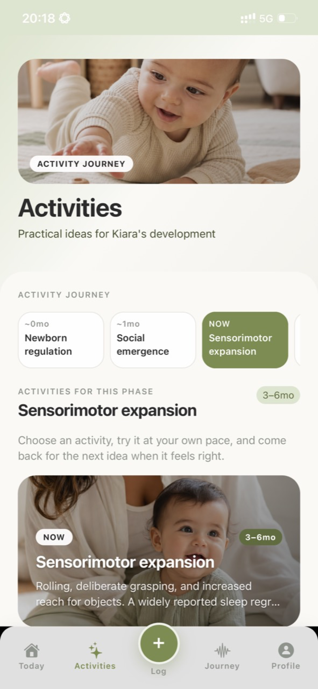
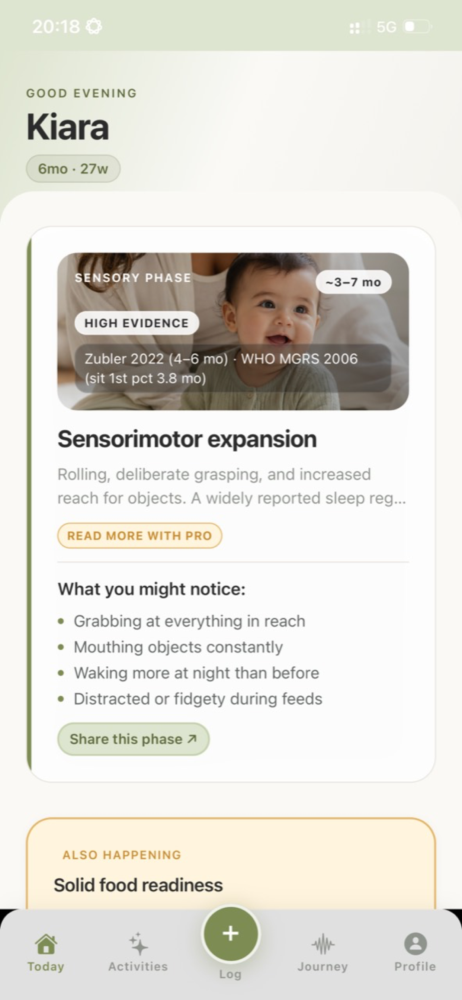
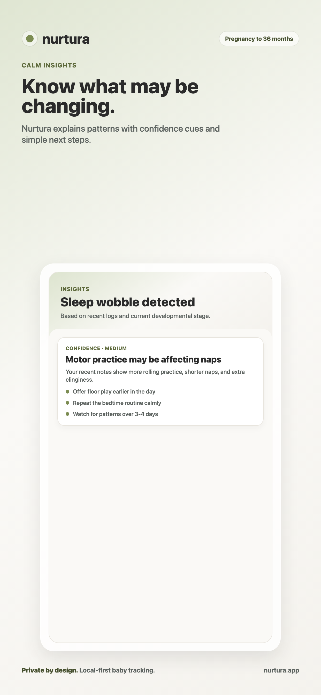
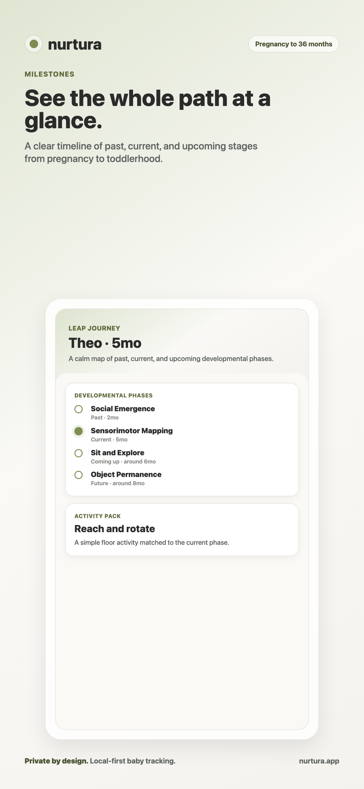
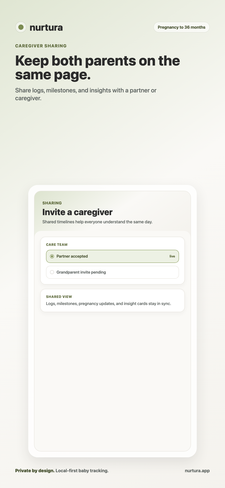
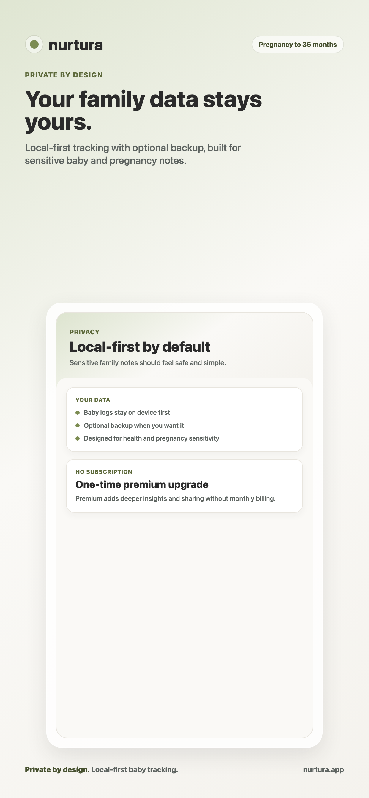
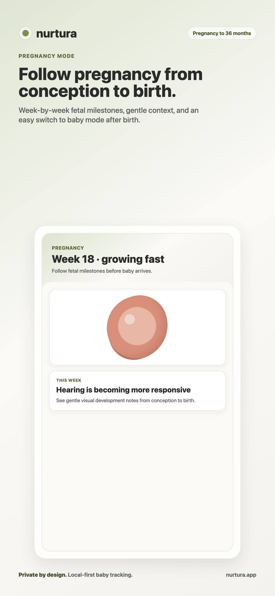
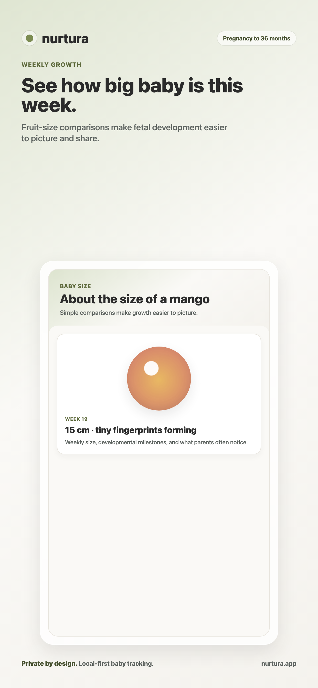

Check-in diário em segundos
Toque em "Tudo bem hoje" para dias rotineiros. Ou registre sono, manha, apego e apetite com sliders de três toques. Um contador de sequência celebra a constância.

Acompanhamento tranquilo para sono, mamadas e marcos — desde a gravidez. Insights de IA, relatórios semanais e compartilhamento com o parceiro. 1 semana grátis, depois R$ 19,90/mês. Cancele quando quiser.
Seus dados ficam no seu dispositivo. Sem conta. O modo gravidez é sempre grátis.

Saiba em qual fase de desenvolvimento seu bebê está agora — e por que ele está agindo assim.
Manha, sono interrompido, apego — cada salto tem uma assinatura. Nurtura conecta o comportamento à pesquisa.
Atividades e dicas específicas para a idade e fase do seu bebê — adaptam-se ao que você registra.
RECURSOS
Feito para mãos cansadas e mentes ocupadas. Check-ins de um minuto, insights baseados em evidências e uma linha do tempo que cresce com seu bebê.
Toque em "Tudo bem hoje" para dias rotineiros. Ou registre sono, manha, apego e apetite com sliders de três toques. Um contador de sequência celebra a constância.

A Nurtura transforma seus registros em insights claros com indicadores de confiança e evidência — sem gráficos assustadores nem jargão médico.

Veja cada fase de desenvolvimento, do recém-nascido aos primeiros passos, com fontes e pacotes de atividades para hoje.

Convide o parceiro ou qualquer cuidador com um código de 6 caracteres. Mesma linha do tempo, mesmos insights — todos no mesmo lugar.

Seus dados ficam no seu dispositivo por padrão. Sem conta para usar a Nurtura. Sincronização na nuvem opcional ao entrar.



DESDE A GRAVIDEZ
A maioria dos apps faz você escolher um lado — gravidez ou bebê. A Nurtura acompanha os dois. Acompanhe o crescimento fetal, marcos semanais e comparações de tamanho com frutas antes do parto. Mude para o modo recém-nascido no dia do nascimento.
Os registros são salvos primeiro no seu dispositivo. Sem pixels de rastreamento, sem analytics de terceiros sobre dados do pai/mãe ou bebê, sem conta para usar o app principal. A sincronização na nuvem é opcional e protegida de ponta a ponta.
Leia a política de privacidade completa →